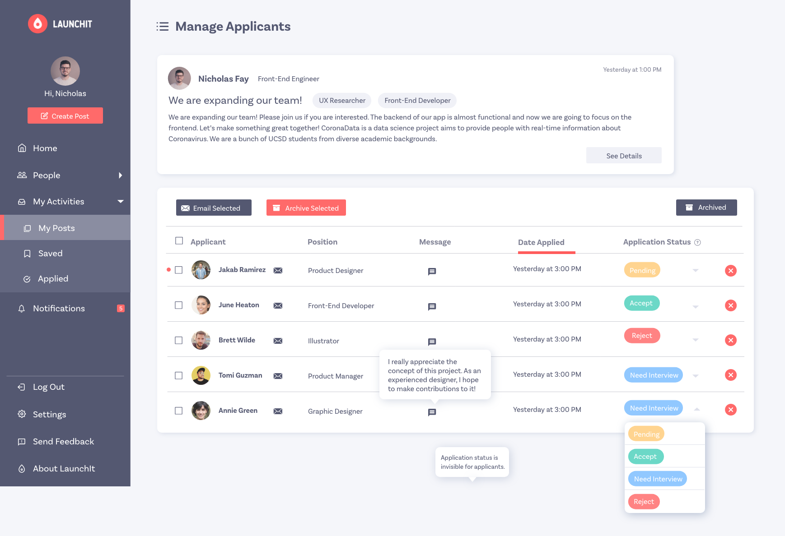

Overview
Launchit is a website dedicated to integrate available resources to connect students with extracurricular opportunities and peers with similar interests. This platform aims at streamlining the process of finding opportunities and recruiting teammates as well as breaking the walls between majors and fields. Engineering students who have brilliant ideas for projects now can recruit teammates with a business backgrounds. In addition, professors and leaders from organizations can also utilize this platform to recurit members. Launchit itself is a team project in which I collaborated with other engineers, designers and researchers at school. As one of the UI/UX designers in the team, my role is to conduct user research, create wireframes and design prototypes for the product.
Background
On college campuses, extracurricular involvement is a crucial and indispensable component of student’s college experiences. Students become involved in extracurricular activities not only for entertainment and social purposes. but more important, to gain and improve skills. However, these extracurricular activities are not very visible and easy to find for students since many of them are scattered in different mediums and platforms, including email, websites, social media and so on. From my own experience and observation as a college student, the process of searching and communicating for a certain opportunity takes a lot of efforts and time. The whole process often takes weeks and months to find one suitable and interesting opportunity to participate.
Competitive Analysis
Information Architecture
Style Guide

High-Fidelity Prototype
Home Page
My Profile Page
My Post Page
Applied Page
Manage Applicants Page
Notifications Page